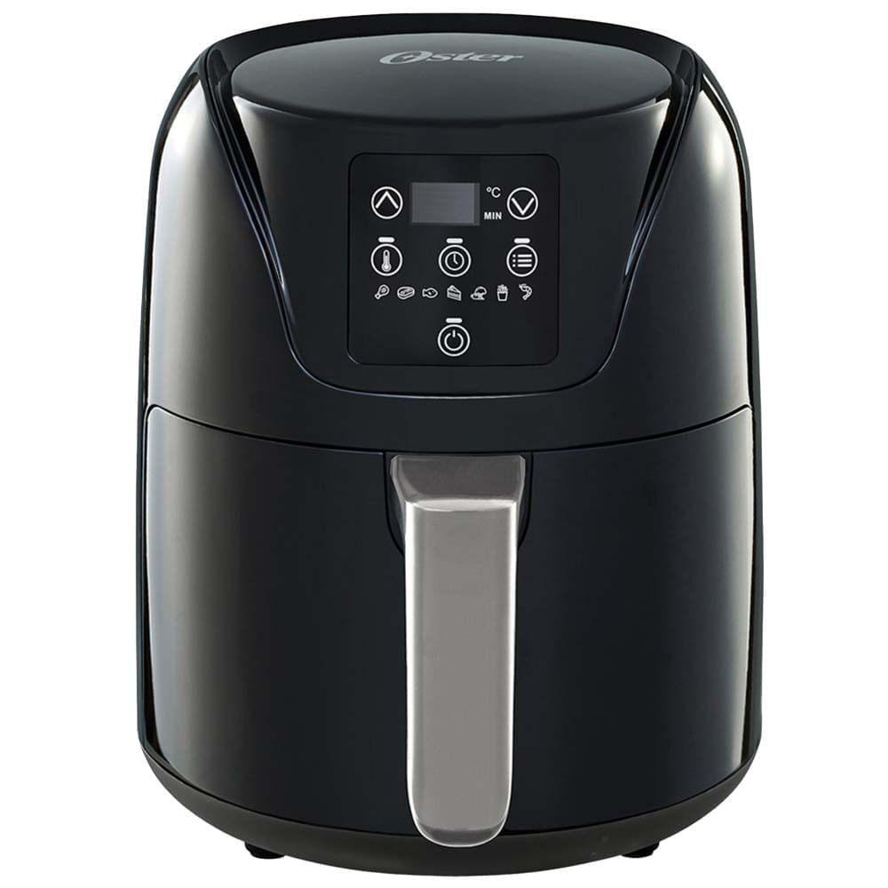

Mantenimiento y reparación de freidoras sin aceite digitales y analógicas en taller especializado en Mar del Plata.
Ingresamos tu freidora al taller para diagnosticar la falla (no enciende, no calienta, error en pantalla o fallas en el temporizador/módulo térmico).
Te enviamos el diagnóstico especificado con el costo de la mano de obra y el valor de los repuestos a cambiar.
Efectuamos el recambio de fusibles térmicos, resistencias, placas de control o termostatos y realizamos pruebas de temperatura antes de entregar.
Los gastos de repuestos e insumos corren a cargo del cliente. Podrás abonarlos vía transferencia antes de iniciar la reparación o al retirar el equipo.
Todos nuestros trabajos en freidoras cuentan con 3 meses (90 días) de garantía en repuestos y mano de obra.
Atendemos todas las marcas del mercado nacional e importado en Mar del Plata:
¿Qué le pasa a tu equipo? Identificá el problema y traelo al taller:
Fusible térmico abierto, cable de alimentación cortado o falla en la placa fuente.
Resistencia cortada, termostato de seguridad saltado o relé de potencia averiado.
Eje trabado por grasa, motor forzador quemado o aspa obstruida.
Falla en la membrana táctil, botonera analógica o placa lógica de control.
Consultanos por la dirección del taller o coordiná la entrega de tu equipo.
Trabajo de reparación de freidora de aire realizado en Mar del Plata:

Estamos disponibles para coordinar turnos y consultas:
Brindamos soluciones integrales de reparación y service en Mar del Plata:
Atendemos en toda la zona de Mar del Plata y la costa: